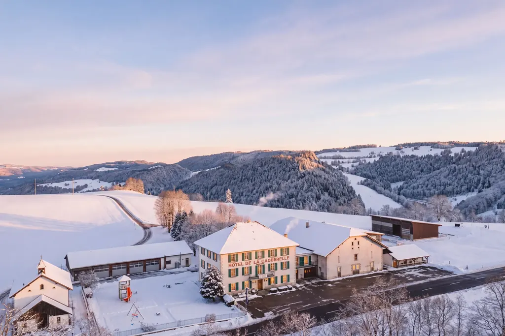
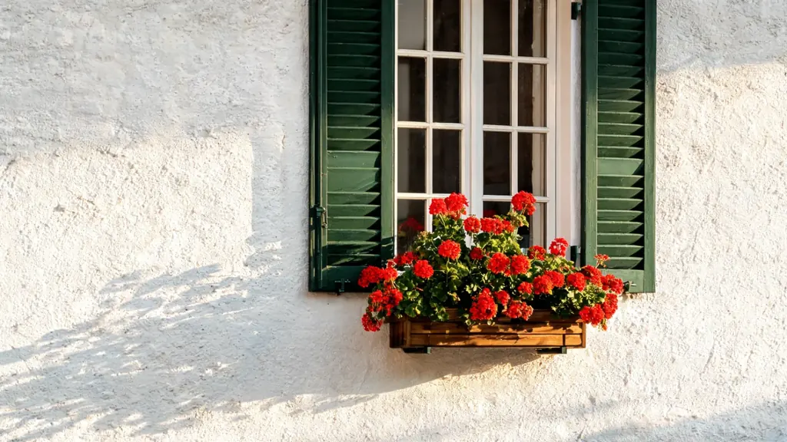
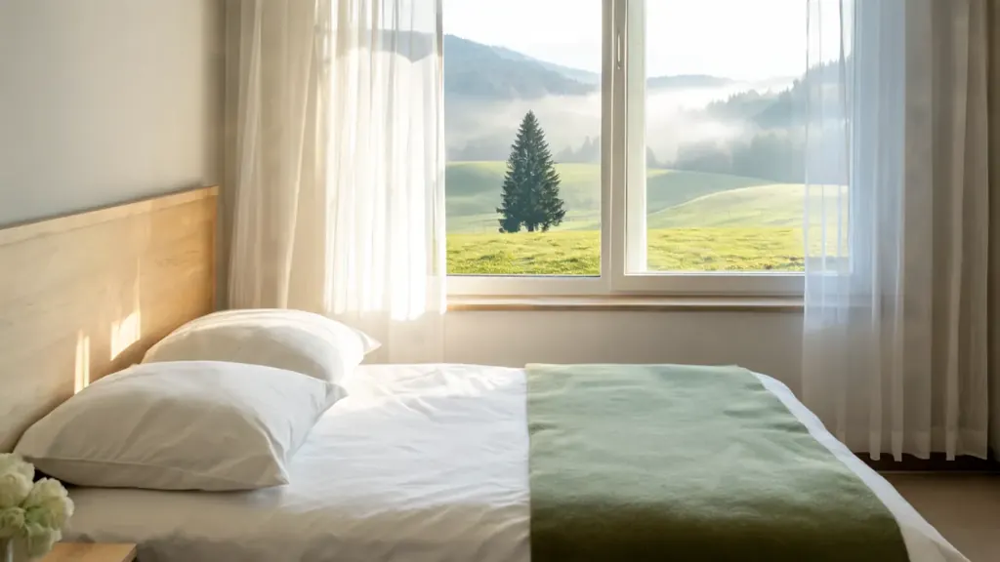
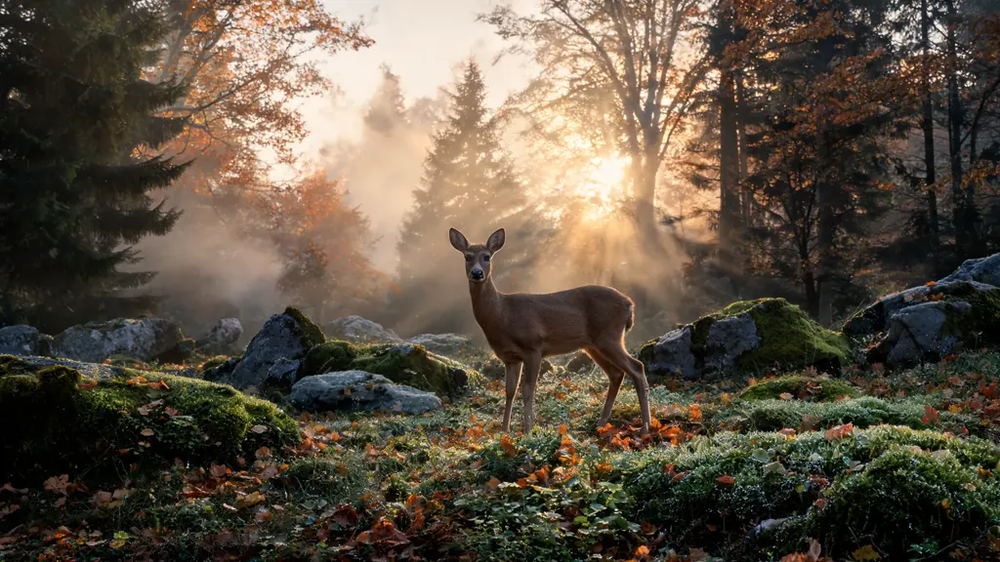

Chambre double
Un grand lit ou deux lits, une salle de douche attenante et la lumière du col par la fenêtre.

Neuf chambres lumineuses et confortables au cœur du Jura, pour les amoureux de nature, de calme et de bonne table.

Dans ce lieu privilégié pour les amoureux de nature et de loisirs, l’Hôtel-Restaurant La Caquerelle dispose de 9 chambres lumineuses et confortables pour un séjour au calme, en plein cœur du Jura.
Au réveil, les pâturages boisés, les sapins solitaires et les crêtes du Clos du Doubs. Le soir, la salle du restaurant et ses plafonds peints. Entre les deux, tout le Jura à portée de route ou de sentier.
Toutes nos chambres ont une douche et un WC privatifs, une télévision à écran plat et le wifi gratuit.
Un grand lit ou deux lits, une salle de douche attenante et la lumière du col par la fenêtre.

Idéale pour voyager entre amis ou avec un enfant, avec les mêmes équipements que nos chambres doubles.

Deux lits et un lit superposé pour les familles, à deux pas des places de jeux.
Photographies d’exemples de chambres ; l’agencement varie d’une chambre à l’autre.

Avant le petit café, un tour sur le sentier : la brume quitte les combes, la rosée prend la lumière, et l’on croise parfois le chevreuil qui a donné son premier nom à la maison, l’Auberge du Chevreuil.
Arrivée dès 15 h, départ jusqu’à 11 h. Une arrivée tardive ? Appelez-nous au 032 426 66 56.
Dès une nuit, transports publics de la zone Vagabond et réductions sur de nombreuses activités, selon conditions de Jura Tourisme.
En savoir plusSur demande uniquement : contactez-nous avant de réserver.
9 chambres : doubles (1 à 2 personnes), à trois lits et familiales (deux lits et un lit superposé, jusqu’à 4 personnes).
Douche et WC privatifs, télévision à écran plat, wifi gratuit, linge de lit et de toilette. Le parking est gratuit.
L’arrivée se fait en principe dès 15 h et le départ jusqu’à 11 h. Pour une arrivée tardive, prévenez-nous au 032 426 66 56.
Sur demande uniquement : contactez-nous avant de réserver pour vérifier ce qui est possible.
Dès une nuit dans un hôtel du Jura, le JURA-PASS donne accès aux transports publics de la zone Vagabond et à des réductions sur de nombreuses activités, selon les conditions de Jura Tourisme.